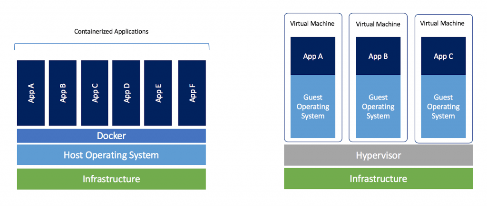

Deployment - wdrażanie oprogramowania
Najczęstsze problemy w trakcie wdrożeń
Idea kontenerów
Uruchamianie gotowych kontenerów Dockerowych
Budowanie własnego kontenera
Co jest potrzebne, żeby uruchomić dany program?
Jaki zestaw programów składa się na projekt?
Jakie są zależności pomiędzy programami?
Program A wymaga biblioteki B, która do kompilacji
wymaga programu C, który zależy na bibliotece D,
której wersja 2.137A nie jest kompatynilna z...
Runtime - wszystkie programy/biblioteki/ustawienia,
których program potrzebuje, żeby działać
Wraz z instalowaniem kolejnych bibliotek, rośnie ryzyko:
Błędu w konfiguracji
Problemów z wersjami pakietów/bibliotek
Konfliktu między paczkami
A gdyby dało się zapakować aplikację i runtime
w jeden kontener, który następnie pójdzie na produkcję?
Gratulacje, taka jest idea konteneryzacji.
FreeBSD - 1999: mechanizm jail
several independent mini-systems called jails,
all sharing the same kernel, with very little overhead.

Deployment nie jest łatwy
Skomplikowany program = skomplikowany setup
Konteneryzacja - spakowanie razem aplikacji i runtime'u
Kontener != Maszyna wirtualna
Plik Dockerfile
Wybór 'podstawki' - systemu bazowego
Skrypty instalujące co trzeba
Done !
Dockerfile - skrypt w PythoniePython - trochę kodu
Framework Flask - biblioteki
docker run -it kontener (do eksperymentów)Kontener jest bezstanowy - nie pamięta zmian
Domyślnie kontener jest zamknięty na świat
Ekspozycja portów
Zamontowanie systemu plików
Opcja -it pozwala na interakcję przez terminal
Wasze kontenery można hostować na Docker Hubie
docker-composeZdefiniowanie wielu kontenerów na raz
Określenie powiązań między kontenerami
Łatwiejsze montowanie systemu plików
Skomplikowany software = skomplikowana konfiguracja
Kontener != Maszyna wirtualna
W kontenerze zamykamy: aplikację, runtime i konfigurację
Kontenery są:
Odizolowane od hosta (chyba że sam coś udostępnisz)
Stateless - nie zapamiętują zmian w systemie plików
Cały kontener możemy zuploadować do chmury
Mam nadzieję, że nauczyliście się czegoś przydatnego